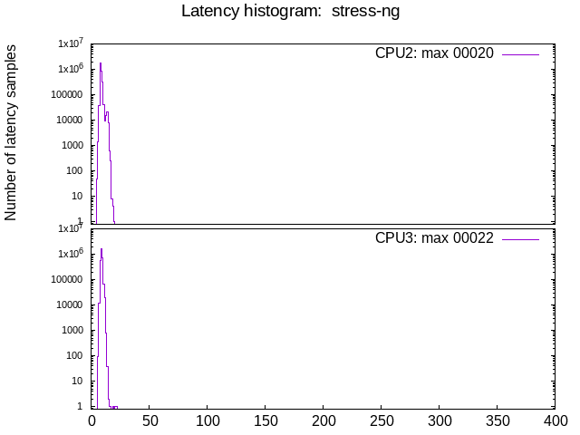

Latency tests: ADLINK MXE-211: GPU, isolcpus=izq
- Date: Thu, 10 Mar 2022 15:50:59 -0600
- Invocation: "./run_tests.sh" "-d" "600" "-1" "-o" "test_mxe-211_x_stress-ng" "ADLINK MXE-211: GPU, isolcpus=izq"
- cyclictest version: cyclictest V 2.30
- Test duration: 600 seconds
- Kernel commandline: BOOT_IMAGE=/boot/vmlinuz-5.10.0-11-rt-amd64 root=UUID=5f6b62f5-6656-4fbc-ae2e-98590ed81658 ro systemd.unified_cgroup_hierarchy=false systemd.legacy_systemd_cgroup_controller=false isolcpus=2-3 nohz_full=2-3 irqaffinity=0-1
- CPU: Intel(R) Atom(TM) Processor E3950 @ 1.60GHz
- Number of CPUs: 4
- Number of isolated CPUs: 2 (2,3)
- DMI info: dmi:bvnAmericanMegatrendsInc.:bvr2.06.10:bd02/06/2020:svnADLINKTECHNOLOGYInc.:pnMXE210:pvrRev.Ax:rvnADLINKTECHNOLOGYInc.:rnMXE210:rvrB1:cvnADLINKTECHNOLOGYInc.:ct13:cvrRevAx:
- OS description: Debian GNU/Linux 11 (bullseye)
- GPU: (None detected)
- isolcpus=2,3
Test #01: stress-ng
